Actividad 17: La Memoria del Crimen — Análisis Forense de Memoria Volátil con Volatility
Introducción
El presente informe ejecutivo documenta el análisis forense realizado sobre la muestra de memoria volátil (OtterCTF.vmem, de 2 GB / 2,147,483,648 bytes) obtenida por elementos especializados de la FGM a partir del ordenador de un presunto cibercriminal vinculado con actividades de ingeniería social, distribución de material ilícito mediante redes P2P (Torrent), operación de servidores Lunar y extorsión mediante ransomware y criptomonedas.
Importancia y fundamento teórico del análisis de memoria volátil (RAM): De acuerdo con el principio de Orden de Volatilidad (RFC 3227), la memoria RAM constituye una de las fuentes de evidencia digital más críticas y efímeras en una investigación de cibercrimen. A diferencia del almacenamiento en disco duro, la memoria RAM conserva el estado dinámico del sistema en vivo al momento exacto de su aseguramiento: estructuras del kernel (KDBG), procesos en ejecución (_EPROCESS), sockets y conexiones de red activas o recientemente cerradas, colmenas del Registro cargadas en memoria (CMHIVE), secretos de autenticación en texto claro (LSASS) y artefactos de navegación web que de otro modo se perderían al apagar el equipo.
Metodología
El análisis se llevó a cabo respetando la integridad de la muestra original y aplicando una metodología secuencial de seis fases mediante Volatility Framework 2.6:
- Reconstrucción de la evidencia fragmentada: Los siete volúmenes comprimidos (
OtterCTF.zip.001aOtterCTF.zip.007) fueron concatenados y extraídos para obtener la imagen forense íntegraOtterCTF.vmem. - Identificación del perfil y línea de tiempo (
imageinfo): Se realizó un barrido del bloque de depuración del kernel (Kernel Debugger Block -KDBGen0xf80002c430a0L) y de la estructuraKUSER_SHARED_DATA, determinando la arquitectura del sistema operativo (Win7SP1x64) y la marca temporal exacta de adquisición. - Extracción de credenciales y análisis del Registro (
hivelist,hashdump,lsadump,printkey): Se localizaron en memoria las direcciones virtuales de las colmenasSAM,SYSTEMySECURITY. A partir de ellas se extrajeron los hashes NTLM de las cuentas locales, el secreto LSADefaultPasswordalmacenado en texto claro durante la sesión activa, y la llaveControlSet001\Control\ComputerName\ComputerNamepara identificar el nombre del equipo. - Análisis de comunicaciones de red (
netscan): Se escanearon los objetos de redTCPv4/UDPv4en memoria física para identificar el direccionamiento IP privado del host comprometido, los puertos en escucha y las conexiones hacia servidores externos vinculados con las aplicaciones en ejecución. - Inspección de procesos y líneas de comando (
pslist,pstree,cmdline): Se reconstruyó el árbol jerárquico de procesos activos e históricos para identificar qué software fue iniciado por el usuario (explorer.exe), detectando clientes P2P, clientes de servidores externos y binarios autoextraíbles sospechosos. - Volcado de memoria de procesos e inspección de artefactos (
memdumpy análisis de cadenas): Se extrajo el espacio de direccionamiento completo de los procesos de interés (chrome.exeyvmware-tray.execonPID 3720) para recuperar artefactos de sesión de correo electrónico y la carga útil (payload) del ransomware junto con la dirección de su monedero Bitcoin.
Documentación y Evidencia Técnica
1. Herramienta y muestra de análisis: Se utilizó la herramienta Volatility (https://github.com/volatilityfoundation/volatility) ejecutada en Windows sobre la imagen forense OtterCTF.vmem.
2. Identifique la marca de tiempo local para el volcado de memoria.
Comando: volatility.exe -f OtterCTF.vmem imageinfo
Resultado: Image local date and time : 2018-08-04 22:34:22 +0300
¿Cuál es su análisis respecto al resultado obtenido en “Image local date and time”?
Se indica el tiempo exacto en que se realizó la adquisición forense en vivo de la memoria RAM, incluyendo la fecha, hora y zona horaria (UTC+0300) de la ubicación del equipo.
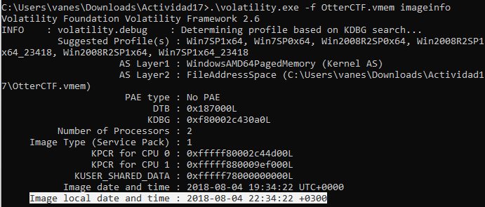
3. Identifique el Sistema Operativo y arquitectura que el cibercriminal ha utilizado.
Comando: volatility.exe -f OtterCTF.vmem imageinfo
Respuesta: Sistema Operativo Windows 7 Service Pack 1 con arquitectura de 64 bits (perfil sugerido: Win7SP1x64).
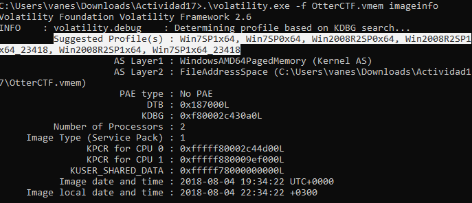
4. ¿Cuál es la contraseña del perfil del cibercriminal quien se presume utilizaba el ordenador pues el inicio de sesión se encontraba visible cuando el sistema en vivo estaba en ejecución?
Comandos:
volatility.exe -f OtterCTF.vmem --profile=Win7SP1x64 hashdump
volatility.exe -f OtterCTF.vmem --profile=Win7SP1x64 lsadumpRespuesta:
Usuario del perfil activo: Rick
Contraseña del perfil: MortyIsReallyAnOtter
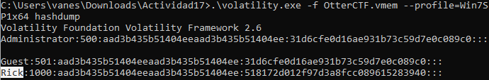
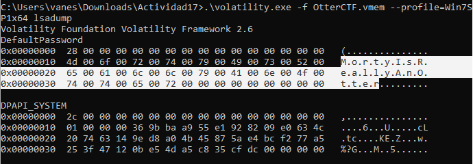
5. Identifique el direccionamiento IP que fue utilizado por el cibercriminal al momento de atacar el sistema local.
Comando: volatility.exe -f OtterCTF.vmem --profile=Win7SP1x64 netscan
Respuesta: La dirección IP local es 192.168.202.131.
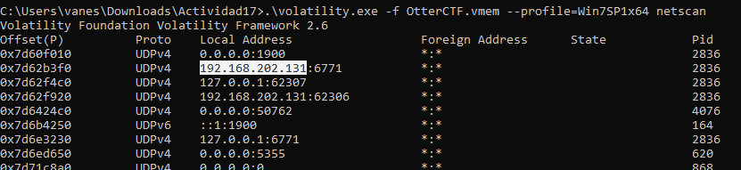
6. Visualice las llaves del Registro del Sistema disponibles.
¿Por qué es de utilidad conocer el Registro del Sistema del dispositivo comprometido?
Porque Windows almacena en memoria información crítica para la investigación forense: la identidad del equipo, zona horaria, interfaces de red e historial de conexiones, cuentas de usuario y credenciales cifradas.
Comando: volatility.exe -f OtterCTF.vmem --profile=Win7SP1x64 hivelist
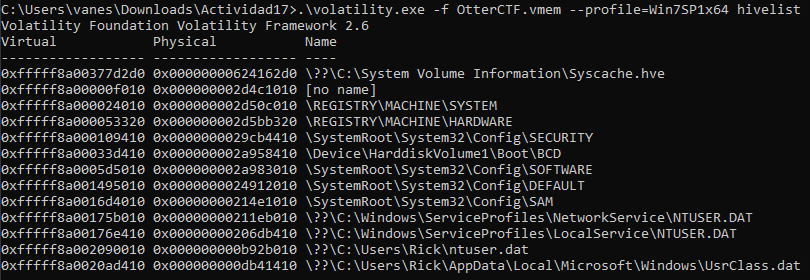
7. Identifique el nombre del ordenador del cibercriminal.
Comando: volatility.exe -f OtterCTF.vmem --profile=Win7SP1x64 printkey -K "ControlSet001\Control\ComputerName\ComputerName"
Respuesta: WIN-LO6FAF3DTFE
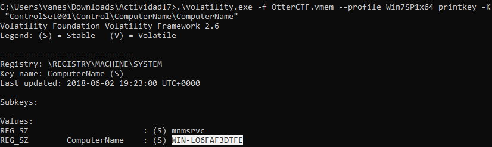
8. Identifique tres procesos que considere importantes de los cuales el cibercriminal haya iniciado la ejecución del software.
Comando: volatility.exe -f OtterCTF.vmem --profile=Win7SP1x64 cmdline
Proceso A (BitTorrent.exe — PID 2836):
¿Por qué considera que es importante? Porque los hechos del caso indican que se busca identificar los servicios Torrent que el cibercriminal utiliza para distribuir/enviar videos y archivos ("C:\Users\Rick\AppData\Roaming\BitTorrent\BitTorrent.exe" /MINIMIZED).
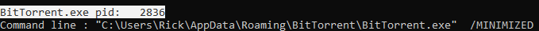
Proceso B (LunarMS.exe — PID 708):
¿Por qué considera que es importante? Porque el cuerpo de inteligencia CNDI señaló la existencia de los servidores Lunar utilizados por el sospechoso para sus actividades ilícitas ("C:\Nexon\MapleStory\LunarMS.exe").
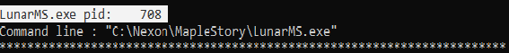
Proceso C (Rick And Morty season 1 download.exe — PID 3820):
¿Por qué considera que es importante? Porque el usuario ejecutó un supuesto descargador de la serie descargado vía BitTorrent ("C:\Torrents\Rick And Morty season 1 download.exe") que en realidad es un archivo autoextraíble que descomprimió y lanzó en segundo plano el proceso malicioso hijo (vmware-tray.exe con PID 3720).
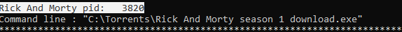
9. Identifique el direccionamiento IP que conecta al servidor malicioso.
Comando: volatility.exe -f OtterCTF.vmem --profile=Win7SP1x64 netscan
Dirección IP (LunarMS.exe): 77.102.199.102
¿Cuál fue el puerto que utilizó además de la dirección IP?
Puerto remoto del servidor: 7575
¿Cuál es la ubicación posible del atacante (https://www.geolocation.com/es)?
La dirección IP pública 77.102.199.102 pertenece a Rusia, específicamente en la región de San Petersburgo.
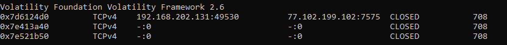
10. Identifique los correos electrónicos que el cibercriminal utilizó para llevar a cabo los ataques de ingeniería social.
¿Cuáles fueron los correos empleados?
rickopicko@mail.com (y referencia asociada rickypinky@mail.com)
¿Desde qué plataforma y navegador fueron abiertos estos correos electrónicos?
Plataforma de correo: Mail.com
Navegador web: Google Chrome versión 68.0
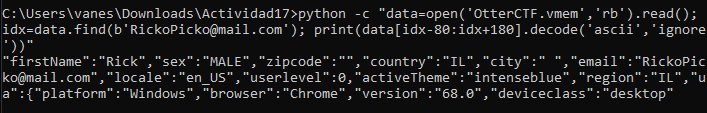
11. Después de un análisis exhaustivo, se obtuvo un indicio de interés: se trata del proceso 3720, el cual fue ejecutado en el ordenador vulnerado. Dicho proceso indica una ejecución falsa de un programa, sin embargo, oculta un mensaje malicioso. Identifique la cartera del monedero cripto a donde presuntamente son enviados los recursos del rescate.
Comandos:
volatility.exe -f OtterCTF.vmem --profile=Win7SP1x64 cmdline -p 3820,3720
volatility.exe -f OtterCTF.vmem --profile=Win7SP1x64 memdump -p 3720 -D dumps¿Cuál es la cartera de criptomoneda?
1MmpEmebJkqXG8nQv4cjJSmxZQFVmFo63M
¿Dicha cartera se encuentra reportada en listas negras de BTC black (https://btcblack.it/index.cgi/verify)?
En verificadores de listas negras de abuso y fraude de Bitcoin, se identifica que es una dirección empleada en este escenario de ransomware (exigiendo un rescate de 0.16 BTC).
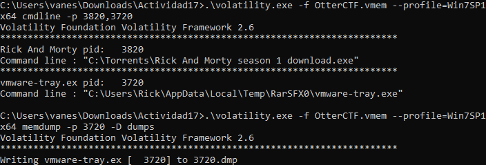
Resumen de Resultados
| Categoría / Indicio | Plugin / Método Utilizado | Resultado Obtenido |
|---|---|---|
| Marca de tiempo (UTC / Local) | imageinfo |
2018-08-04 19:34:22 UTC / 2018-08-04 22:34:22 +0300 |
| Sistema Operativo y Arquitectura | imageinfo |
Windows 7 Service Pack 1 (64 bits / Win7SP1x64) |
| Nombre del Ordenador | printkey |
WIN-LO6FAF3DTFE |
| Perfil de Usuario y Contraseña | hashdump / lsadump |
Usuario: Rick (UID 1000) / Contraseña: MortyIsReallyAnOtter |
| Dirección IP Local del Host | netscan |
192.168.202.131 |
| Procesos Clave Identificados | cmdline / pstree |
1. BitTorrent.exe (PID 2836)2. LunarMS.exe (PID 708)3. Rick And Morty (PID 3820) → vmware-tray.exe (PID 3720)
|
| Servidor Malicioso y Puerto | netscan |
IP Remota: 77.102.199.102 / Puerto TCP: 7575 (LunarMS.exe) |
| Geolocalización de la IP Externa | Geolocation (77.102.199.102) |
San Petersburgo, Federación Rusa (Huso horario UTC+3) |
| Correos Electrónicos y Plataforma | Análisis de memoria (chrome.exe) |
rickopicko@mail.com (y rickypinky@mail.com) abiertos en Mail.com desde Google Chrome v68.0 (Windows) |
| Monedero Cripto (Ransomware PID 3720) | memdump -p 3720 + Strings |
Cartera BTC: 1MmpEmebJkqXG8nQv4cjJSmxZQFVmFo63M (Monto exigido: 0.16 BTC) |
Análisis Forense
Al relacionar los hallazgos técnicos extraídos de la memoria RAM con las hipótesis de inteligencia de la FGM, SEDENE y CNDI, se confirman los siguientes vínculos probatorios:
1. Confirmación de identidad del sujeto ("Rick" / "Morty") y evidencia EV456FGM:
En el canal de Telegram investigado figuraban los alias "Ricky" y "Morty". El análisis del sistema demostró que la cuenta principal activa en el equipo corresponde al usuario Rick, cuya contraseña en texto claro recuperada mediante lsadump es MortyIsReallyAnOtter. Asimismo, en la memoria del navegador Google Chrome v68.0 se localizó la sesión activa en la plataforma Mail.com bajo la cuenta rickopicko@mail.com (con metadatos de perfil a nombre de "Rick", sexo masculino, 26 años), confirmando la hipótesis de la evidencia EV456FGM sobre el uso de correos electrónicos desde dicho equipo para ejecutar campañas de ingeniería social.
2. Vinculación con los informes de inteligencia de SEDENE (FAF3), CNDI (TFE) y evidencia EV455FGM:
La consulta a la colmena SYSTEM del Registro reveló que el nombre del ordenador es WIN-LO6FAF3DTFE. Este identificador integra de manera exacta las iniciales FAF3 aportadas por SEDENE y las iniciales TFE aportadas por el CNDI (WIN-LO6 + FAF3 + D + TFE). Aunado al direccionamiento IP local 192.168.202.131 y al sistema operativo Windows 7 SP1 x64, se establece una correlación positiva e inequívoca con la evidencia EV455FGM.
3. Operación de servidores Lunar (LunarMS.exe) y correlación geográfica:
Se comprobó la ejecución activa del binario "C:\Nexon\MapleStory\LunarMS.exe" (PID 708), corroborando la inteligencia del CNDI respecto al uso de servidores Lunar. Mediante netscan se identificó que dicho proceso estableció comunicación TCP desde 192.168.202.131:49530 hacia el servidor externo 77.102.199.102 en el puerto 7575. La geolocalización de esta IP ubica al servidor en San Petersburgo, Rusia, cuya zona horaria (UTC+3) concuerda con el desfase horario +0300 registrado en el reloj local del volcado de memoria (2018-08-04 22:34:22 +0300), así como con los metadatos regionales (IL / IDT UTC+3) observados en la sesión del navegador.
4. Uso de servicios BitTorrent y análisis del proceso malicioso 3720 (vmware-tray.exe):
Se identificó el cliente BitTorrent.exe (PID 2836) ejecutándose en modo minimizado ("C:\Users\Rick\AppData\Roaming\BitTorrent\BitTorrent.exe" /MINIMIZED), confirmando el empleo de redes P2P Torrent. A través de este servicio se descargó en C:\Torrents\ el ejecutable "Rick And Morty season 1 download.exe" (PID 3820). Al analizar la jerarquía de procesos y sus argumentos (cmdline), se descubrió que el proceso 3820 descomprimió en una carpeta temporal un supuesto componente de VMware: "C:\Users\Rick\AppData\Local\Temp\RarSFX0\vmware-tray.exe" (PID 3720).
Al volcar la memoria del proceso 3720 (3720.dmp), se confirmó que se trata de un ransomware camuflado que despliega la nota de extorsión: "Your Files are locked... This is Ransomware. It locks your files until you pay for them... Send 0.16 to the address below", exigiendo el pago del rescate a la cartera de Bitcoin 1MmpEmebJkqXG8nQv4cjJSmxZQFVmFo63M.
Posibles Líneas de Investigación
Derivado de la evidencia digital obtenida, se proponen las siguientes líneas de investigación para dar continuidad al caso:
-
Rastreo financiero en la Blockchain de Bitcoin (Blockchain Forensics): Realizar un análisis de trazabilidad de transacciones entrantes y salientes sobre la dirección de monedero
1MmpEmebJkqXG8nQv4cjJSmxZQFVmFo63Mpara identificar casas de cambio (exchanges) con políticas KYC (Know Your Customer) donde el cibercriminal o sus cómplices conviertan los fondos del rescate a moneda fiduciaria, así como cruzar movimientos con los pagos de0.0000043 BTCsolicitados en el grupo de Telegram"S0_Just_M0v3_Socy". -
Requerimientos legales a proveedores de servicios (ISP y Correo):
- Solicitar mediante cooperación jurídica internacional los registros de conexión (logs de acceso, direcciones IP públicas históricas y correos de recuperación) asociados a las cuentas
rickopicko@mail.comyrickypinky@mail.comante el proveedor Mail.com. - Investigar la infraestructura alojada en la dirección IP
77.102.199.102(puerto7575) para identificar a otros usuarios o víctimas conectadas al servidorLunarMS.
- Solicitar mediante cooperación jurídica internacional los registros de conexión (logs de acceso, direcciones IP públicas históricas y correos de recuperación) asociados a las cuentas
-
Ingeniería inversa del binario
3720(vmware-tray.exe) y recuperación de archivos: Extraer el ejecutable del proceso3720medianteprocdumpy realizar un análisis estático y dinámico (descompilación.NET) para extraer la llave simétrica/asimétrica de cifrado en memoria y desencriptar los archivos afectados sin realizar pago alguno. -
Análisis de pares (peers) en la red BitTorrent: Inspeccionar los archivos de configuración y caché de BitTorrent en memoria (
resume.dat,dht.daty las conexiones cerradas del PID2836ennetscan) para identificar los hashes de los archivos.torrentcompartidos y las direcciones IP de otros miembros de la red delictiva.
Referencias
-
Ligh, M. H., Case, A., Levy, J., & Walters, A. (2014). The Art of Memory Forensics: Detecting Malware and Threats in Windows, Linux, and Mac Memory. Wiley Publishing. ISBN: 978-1-118-82509-9. (Obra técnica de referencia escrita por los creadores de Volatility Framework; fundamenta el análisis de estructuras del kernel
KDBG, objetos_EPROCESS, colmenas del registro en RAM y extracción de secretos LSA). -
Volatility Foundation. (2016). Volatility Framework - Volatile memory extraction utility framework (Version 2.6) [Documentación técnica y repositorio oficial]. GitHub. https://github.com/volatilityfoundation/volatility/wiki/Command-Reference (Referencia técnica oficial de los plugins empleados en la práctica:
imageinfo,hashdump,lsadump,netscan,hivelist,printkey,pstree,cmdlineymemdump). - Brezinski, D., & Killalea, T. (2002). Guidelines for Evidence Collection and Archiving (RFC 3227). Internet Engineering Task Force (IETF). https://datatracker.ietf.org/doc/html/rfc3227 (Estándar técnico internacional que establece el Principio del Orden de Volatilidad —Order of Volatility— en la recolección y análisis de evidencia digital en memoria RAM).
- Kent, K., Chevalier, S., Grance, T., & Dang, H. (2006). Guide to Integrating Forensic Techniques into Incident Response (NIST Special Publication 800-86). National Institute of Standards and Technology (NIST), U.S. Department of Commerce. https://doi.org/10.6028/NIST.SP.800-86 (Guía técnica oficial del NIST sobre metodologías de análisis forense en sistemas operativos, preservación de evidencia volátil, análisis de tráfico de red y correlación de artefactos en incidentes de ciberseguridad).
-
Russinovich, M. E., Solomon, D. A., & Ionescu, A. (2012). Windows Internals, Part 1: Covering Windows Server 2008 R2 and Windows 7 (6th ed.). Microsoft Press. ISBN: 978-0-7356-4873-9. (Documentación técnica de arquitectura de Windows 7 x64 que describe la administración de memoria paginada
WindowsAMD64PagedMemory, el subsistemaLSASS, la jerarquía de procesos y la estructura interna del Registro de Windows).